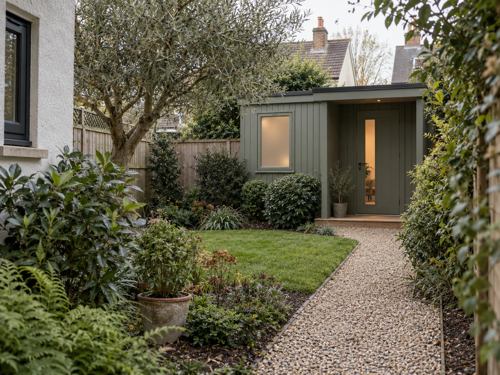
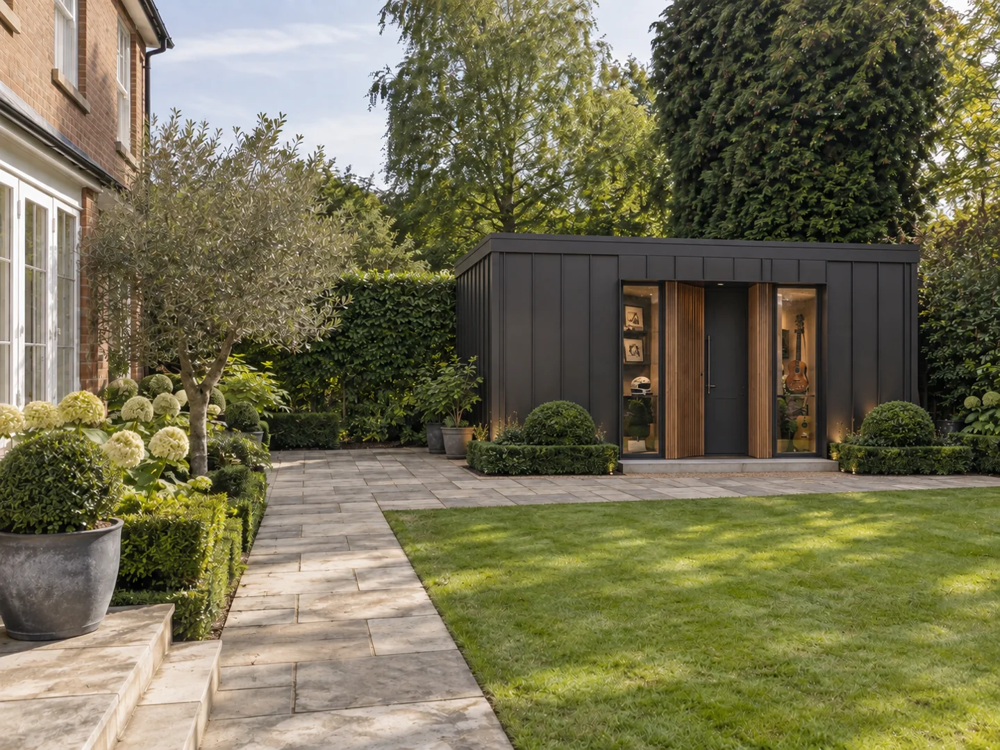
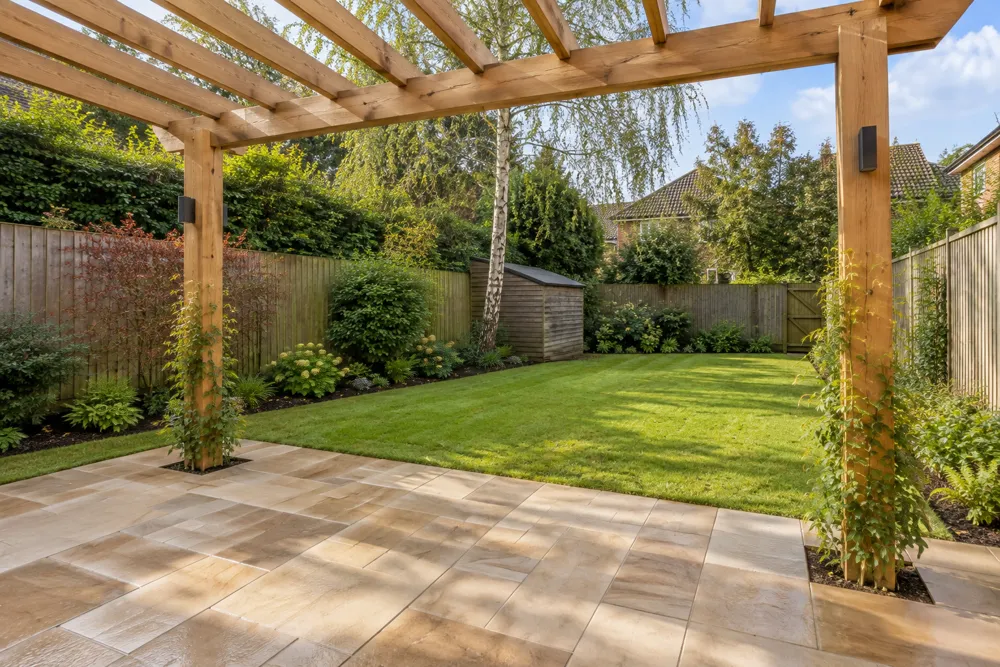
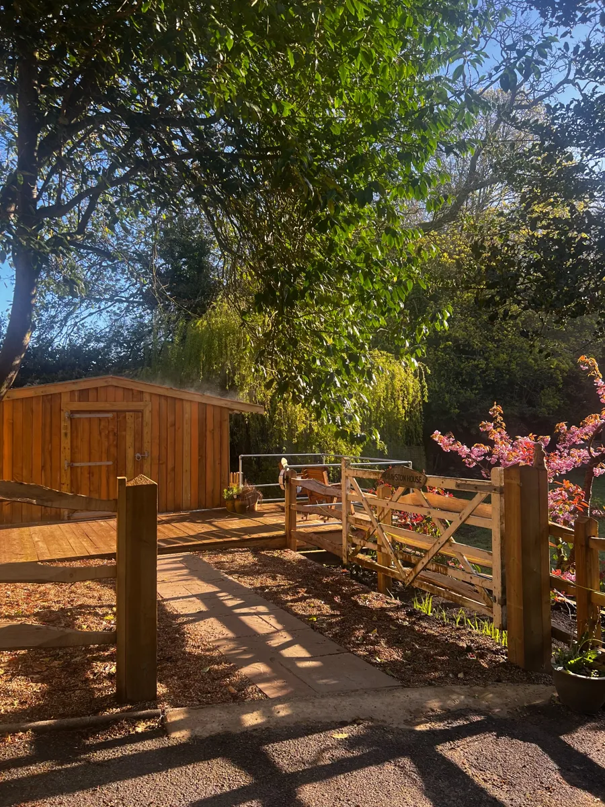

One contact
Someone who knows your project and keeps you informed.

Hi, I’m Damian. I’m a maker with more than 30 years of experience leading design and complex projects, alongside a lifelong interest in gardens, materials and nature.
Blossom exists to help homeowners improve their gardens without having to manage every supplier and decision themselves.
Once you approve the design, materials, scope of work, budget and proposed schedule, we take care of organising the team, suppliers and day-to-day work through to completion. We agree how often you’d like updates and keep you involved in any decisions that need your approval.
Our specialist areas are garden buildings, decking, gates, fencing and maintenance. We also deliver wider hard landscaping projects.
We take pride in a clean, tidy and safe working environment. Our teams work to clear safety standards and follow the health and safety requirements that apply to each project. Protecting everyone on site, your household and your property is part of how we plan and carry out the work. We do not compromise on health and safety.
Someone who knows your project and keeps you informed.
Agreed work and fees before you commit.
Specialists brought in where your project needs them.


